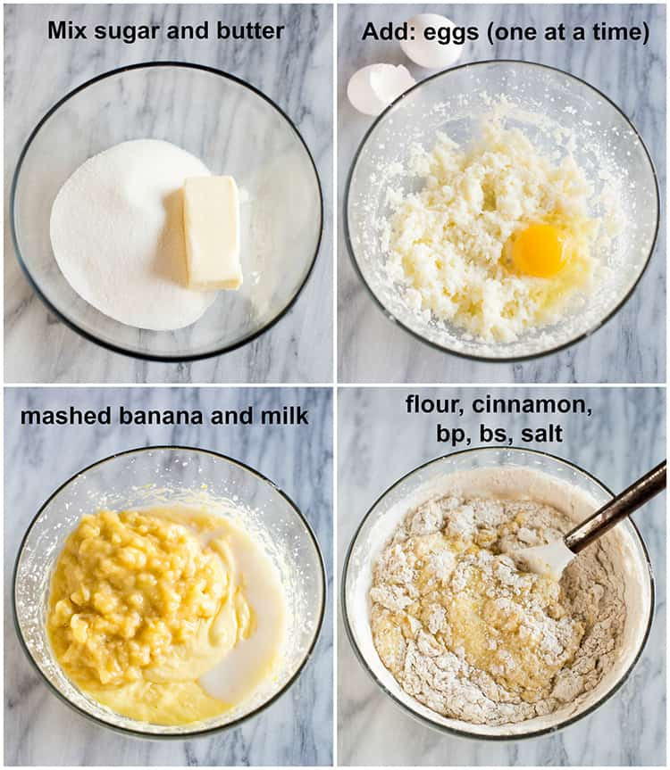

2 to 3 very ripe bananas, peeled (about 1 1/4 to 1 1/2 cups mashed)
1/3 cup melted butter, unsalted or salted
1 teaspoon baking soda
Pinch of salt
3/4 cup sugar (1/2 cup if you would like it less sweet, 1 cup if more sweet)
1 large egg, beaten
1 teaspoon vanilla extract
1 1/2 cups of all-purpose flour

Banana Bread Instructions
Step 1 - Preheat the oven to 350°F (175°C), and butter a 4x8-inch loaf pan.
Step 2 - In a mixing bowl, mash the ripe bananas with a fork until completely smooth. Stir the melted butter into the mashed bananas.
Step 3 - Mix in the baking soda and salt. Stir in the sugar, beaten egg, and vanilla extract. Mix in the flour.
Step 4 - Pour the batter into your prepared loaf pan. Bake for 50 minutes to 1 hour at 350°F (175°C), or until a tester inserted into the center comes out clean.
Step 5 - Remove from oven and let cool in the pan for a few minutes. Then remove the banana bread from the pan and let cool completely before serving. Slice and serve. (A bread knife helps to make slices that aren't crumbly.)